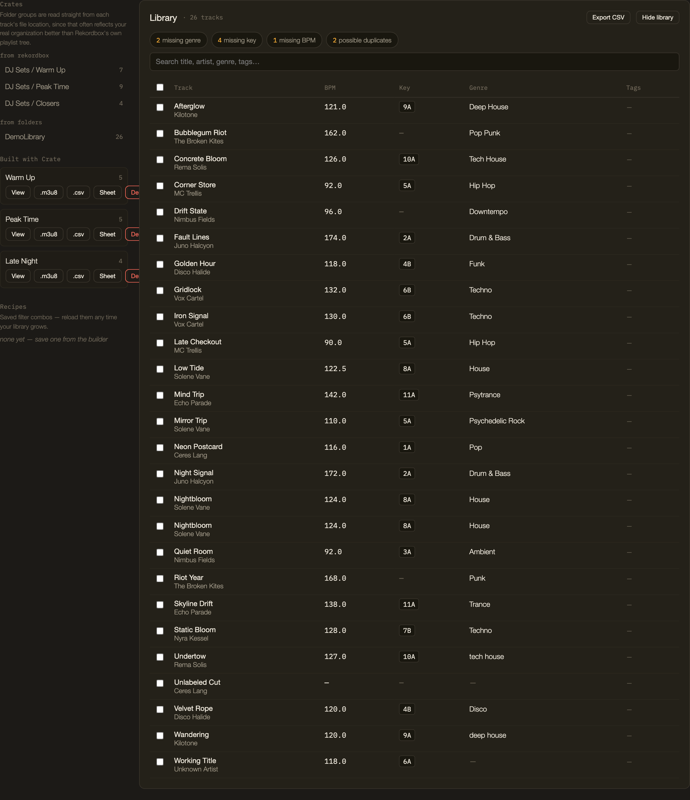
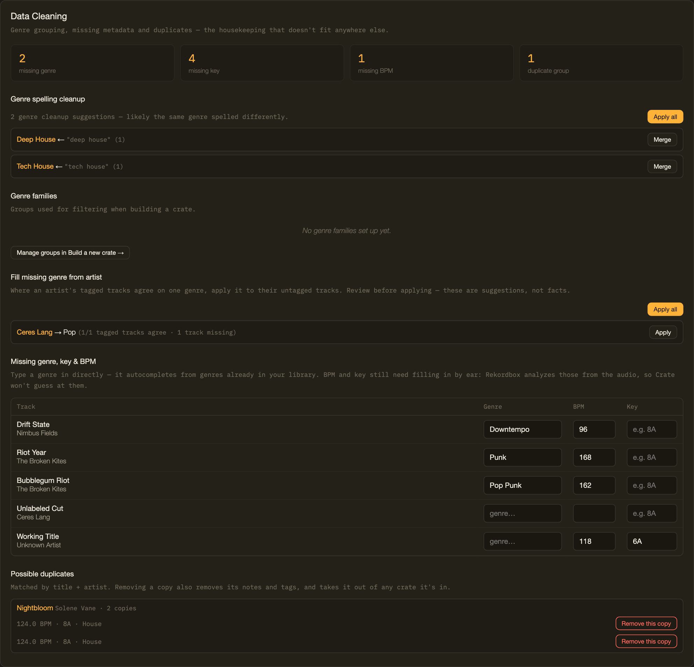
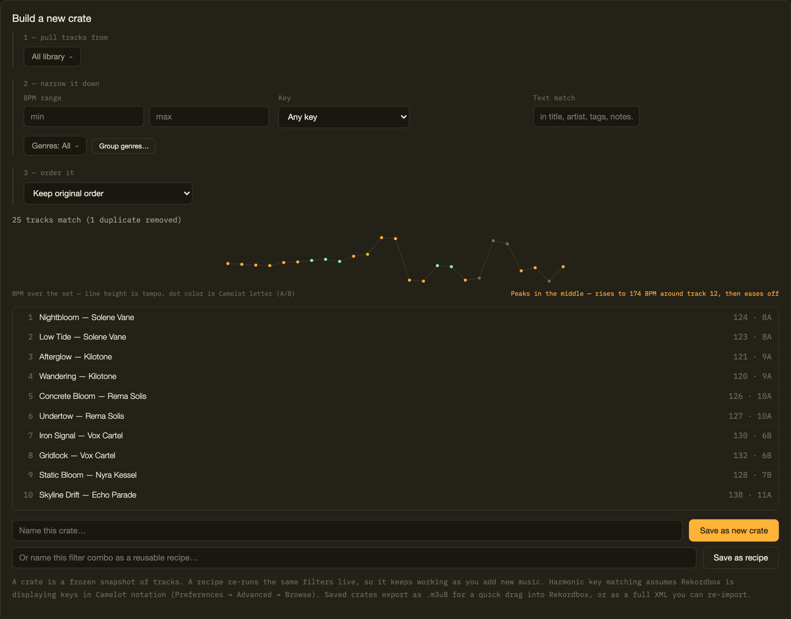
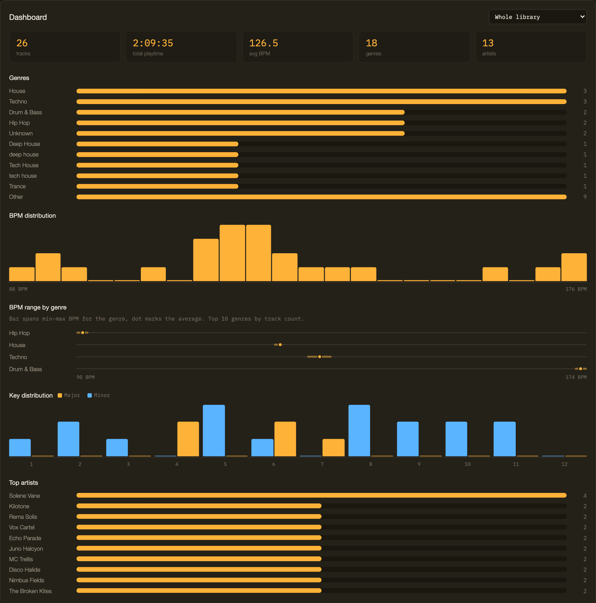
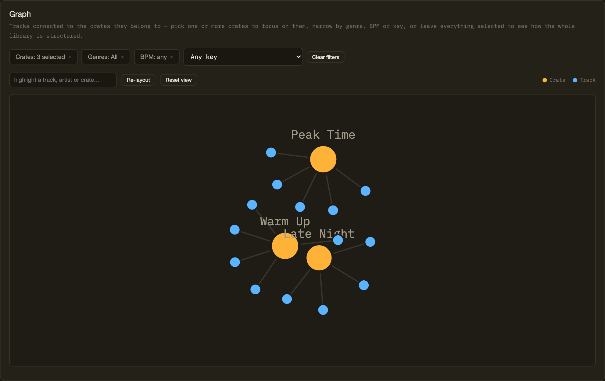
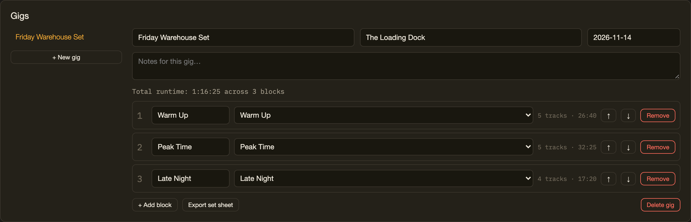
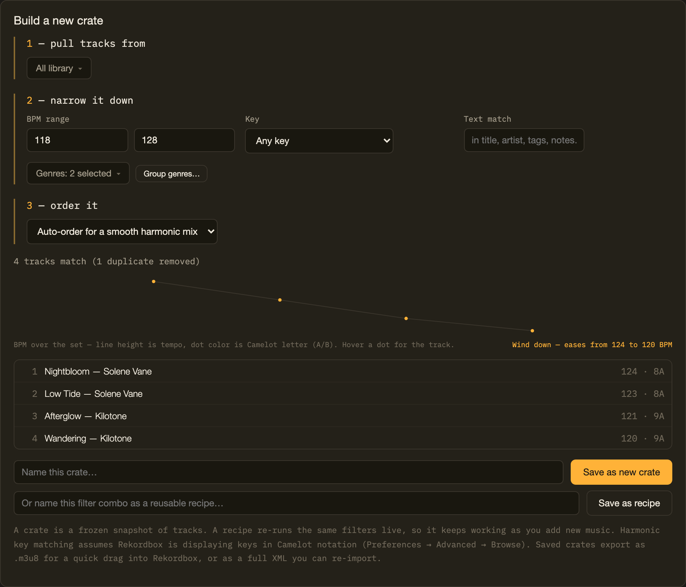

Turn your Rekordbox library into your next set.
Clean your library, discover forgotten tracks, build better crates, and prepare your next set — entirely in your browser.

Why this exists
Your library grows faster than your playlists.
A few years of digging brings thousands of tracks, a genre list that's really the same handful of tags spelled six different ways, duplicate imports, and tracks with no key or BPM at all. Rekordbox is great at playing music. It's not built for making sense of a library that size.
Crate reads the export you already have, gives you a clearer view of what's actually in there, and turns filtering and building into something that takes minutes instead of a scroll-and-guess session.
As a free-time DJ, I got tired of digging through the same messy Rekordbox library every time I wanted to put together a new set. Crate is the tool I wanted for myself first — something that reads what's already in Rekordbox, helps me actually see what's in there, and builds new playlists out of it without a subscription or an account. I'm sharing it in case it's useful to you too.
— the person who built this
How it works
Export once. Do everything else in Crate.
Five steps, all of them fast, none of them requiring you to give up your library to a server.
Export XML
File → Export Collection in xml format. One file, everything in it.
Import
Drop the file in. It's parsed and stored in your browser — nothing uploads.
Clean + analyze
Fix genre spelling, missing metadata and duplicates. See the shape of your library on the Dashboard.
Filter + build
Narrow by BPM, key and genre, then order it — a smooth harmonic mix or a target energy shape.
Export
.m3u8 for one crate, or a merged XML for everything — back into your normal workflow.
What's in it
Six tools, one library.
Every screen below is the real app, not a mockup — a small made-up demo library, the same one you can load from the import screen.
Know what's actually in your library.
A sortable, searchable table of every track, with your own notes and tags layered on top of what Rekordbox already gives you. Health-check chips flag what's missing at a glance.
- Sort and search by title, artist, genre or tag
- Flags missing genre, key, BPM, orphaned tracks and duplicates
- Your own notes, tags, and "mixes well into" links per track
Fix the mess before it ruins your set.
Genre spelling cleanup with one-click merges, a suggester that fills in missing genre from an artist's other tracks, and duplicate detection — every change reviewed before it happens, and undoable after.
- Merges genre spelling variants like "Deep House" / "deep house"
- Suggests missing genre from an artist's tagged tracks — never guesses at BPM or key
- Finds likely duplicates and removes them safely, with undo

Build crates you can actually play.
Pull tracks from your whole library or specific crates, narrow by BPM range, harmonic (Camelot) key or genre, then order the result — a smooth harmonic mix, or a target energy shape for the set.
- Filter by BPM range, Camelot-compatible key, genre or genre families
- Order by BPM, key, a smooth harmonic auto-mix, or a target energy curve
- Save as a frozen crate, or as a recipe that re-runs live as your library grows

Understand what's actually in your library.
Genre and BPM breakdowns, key distribution across the Camelot wheel, and your most-represented artists — for the whole library or any single crate.
- Track count, playtime, average BPM, genre and artist counts
- BPM distribution and BPM range per genre
- Key distribution split by major and minor

Discover connections across your library.
Your crates and tracks laid out as a network — which tracks cross over between crates, filterable by genre, BPM or key. Drag it, zoom it, hover a track to see what it connects to.
- Crates as hubs, tracks as dots, sized and connected by real membership
- Focus on one or more crates, or filter by genre, BPM or key
- Drag, pan, zoom, and search to highlight a track or artist

Prepare the whole set.
Bundle crates into ordered blocks — warm-up, peak, closer, whatever labels make sense — with running totals, and export a clean printable set sheet for the booth.
- Reorder blocks, track total runtime automatically
- Venue, date and notes per gig
- One-click printable set sheet

30 seconds
From messy library to playable crate.
What actually happens, start to finish — no step skipped, nothing staged.
Import
Drop in a Rekordbox XML export. Loads instantly, nothing leaves the browser.
Explore
Sort and search the Library table, check the health chips for what's missing.
Filter
Narrow by BPM range, Camelot key or genre in the Builder.
Clean
Merge a genre spelling variant, fill a missing genre, clear a duplicate.
Build
Order it for a smooth harmonic mix, save it as a crate.
Export
.m3u8 out, dragged straight into Rekordbox's Playlists panel.
Local by design
Your music stays yours.
Not a policy promise — a consequence of how the app is built. It's one static HTML file with nowhere for a server to live.
100% local
Your Rekordbox XML is parsed in your browser tab and saved to this browser's local storage. It never crosses the network.
No account
No sign-up, no login, nothing to lose the password to. Open the app and start.
Open source
MIT licensed. Read the code, run it yourself, or fork it — nothing is hidden behind a build step.
In practice
Build a house set from what you've already got.
A real filter, run against Crate's small built-in demo library — the same filters work identically against a real library of a few thousand tracks.
Three filters and an ordering choice — that's it. Save it as a crate, or as a recipe that keeps re-running as new house tracks get tagged into the library.

Who it's for
Built for anyone who's outgrown their own library.
Bedroom DJs
Make sense of a library that grew faster than you organized it.
Working DJs
Prepare crates and sets faster, with less scrolling and guessing.
Open-format DJs
Find the right track fast across a library that spans every genre.
Library nerds
Clean, tag, analyze and organize down to the last duplicate.
Questions
FAQ
Straight answers, checked against how the app actually works.
Does Crate upload my music?+
Do I need an account?+
Does Crate modify my Rekordbox library?+
How does the XML workflow work?+
File → Export Collection in xml format. Drop that file into Crate. When you're done building, export a crate as .m3u8 for a quick drag into Rekordbox's Playlists panel, or as a merged XML to bring everything back in at once.Which Rekordbox versions are supported?+
File → Export Collection in xml format produces a file, Crate can read it.Is Crate free?+
Does it work offline?+
Does it work with Traktor?+
What can I export?+
.m3u8 or a merged Rekordbox XML, the whole library or any crate as CSV, an experimental Traktor NML, a printable set sheet for a gig, and a JSON backup of your Crate data for moving between browsers or devices.Is Crate affiliated with Rekordbox, Pioneer DJ, or AlphaTheta?+
Your library is already yours. Make it usable.
Runs in your browser. No account required.
Changelog